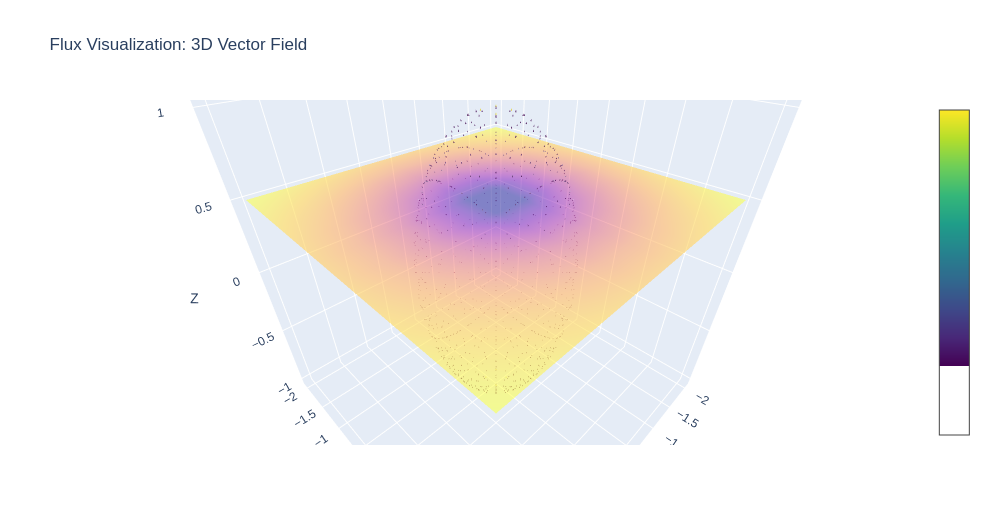

**Computer Graphics Summary**
Welcome to the Computer Graphics course summary! This guide provides an intuitive, high-level overview of the key concepts discussed in the Computer Graphics course taught by Prof. Dr. M. Gross & Dr. Marios Papas at ETH Zurich 2024 (https://cgl.ethz.ch/teaching/cg24/home.php).
This summary was created by [Sven Pfiffner](https://github.com/SvenPfiffner) to prepare for the final exam and made available to the public with the hope that it will be useful to others. If you find any errors or have suggestions for improvement, please feel free to open an issue or pull request on the [GitHub repository](https://github.com/SvenPfiffner/ComputerGraphicsSummary). Please note that this page closely follows the material taught during the course and all credit for the underlying theory goes to Prof. Dr. M. Gross, Dr. Marios Papas, their team and the ETH Zurich.
Quantities of light
==============================================================
## Flux
is a measure of how much light passes through a surface (or boundary) in a given amount of time. Imagine a bounding sphere around a lightbulb that emits equally in all directions. The light that passes through the sphere is the flux. We formalize flux as
$$
\Phi(A) \; \; \left[ \frac{J}{s} = W \right]
$$

## Irradiance
is a measure of how much power from light is recieved per unit area. Think of sunlight hitting your skin.
- If you stand in direct sunlight, you feel more warmth because more light energy is hitting your skin per second $\rightarrow$ higher irradiance.
- If you stand in the shade, you feel less warmth because less light energy is hitting your skin per second $\rightarrow$ lower irradiance.
- If you use a magnifying glass to focus sunlight on your skin, you feel a burning sensation because the light energy is concentrated on a smaller area $\rightarrow$ higher irradiance.
As irradiance is a measure of power per unit area, it essentially breaks down to flux per unit area and can thus be formalized as
$$
E(x) = \frac{d\Phi(A)}{dA} \; \; \left[ \frac{W}{m^2} \right]
$$
## Radiosity
is a measure of how much power is emitted by a surface per unit area. As this is the inverse of irradiance, its formalization is equivalent. Think of a lightbulb emitting light in all directions. The radiosity is the power emitted by the lightbulb per unit area of the lightbulb's surface. We have
$$
B(x) = \frac{d\Phi(A)}{dA} \; \; \left[ \frac{W}{m^2} \right]
$$
## Radiant Intensity
is a measure of how much light is emitted in a given direction. It is the flux emitted by a light source per unit solid angle. It tells us how focused or spread out the light is. Think of the following example
- The sun emits a huge amount of power (flux), but it spreads in all directions, so the radiant intensity is moderate.
- A laser pointer emits a small amount of power, but it is focused in a very narrow beam, so the radiant intensity is high.
We have
$$
I(\omega) = \frac{d\Phi(\omega)}{d\omega} \; \; \left[ \frac{W}{sr} \right]
$$
where $\omega$ is the solid angle of the beam.
## Radiance
measures how much light travels in a specific direction from a specific surface area. It is the most fundamental quantity in computer graphics as it directly corresponds to what our eyes and cameras percieve as brightness. Think of the following
- If you look directly into a flashlight, it appears very bright (high radiance).
- If you look atht the beam from the side, it appears dimmer (lower radiance).
- The flashlight still emits the same amount of light (flux does not change), but its brightness depends on the viewing angle.
In other words, the radiance is radiant intensity weighted by the cosine of the angle between the direction of the light and the normal of the surface. We have
$$
L(x, \omega) = \frac{d^2\Phi(\omega)}{dA \cdot d\omega \cdot \cos(\theta)} \; \; \left[ \frac{W}{m^2 \cdot sr} \right]
$$
where $\theta$ is the angle between the normal of the surface and the direction of the light.
Lamberts Cosine Law
==============================================================
Lamberts Cosine Law is a fundamental prinziple in computer graphics. It describes how light interacts with diffuse surfaces, which reflect light evenly in all directions.
The brightness of a surface depends not only on the insensity of the light source but also on the angle at which the light hits the surface.
- When light strikes a surface perpendicularly, it appears brightest.
- When light hits at an angle, it spreads out over a larger area, making each small part of the surface recieve less light.
- When light is at a grazing angle, the surface recieves very little light, making it appear darker.
Shape Representation
==============================================================
## Parametric Representation
Imagine you are drawing a curve on a piece of paper. One way to describe this curve is by listing a series of points $(x,y)$ that make up the curve. But what if you could describe the whole curve using just a single equation? This is where **parametric representations** come in.
Instead of directly describing the curve as $y = f(x)$, we introduce an extra variable - let's call it $t$ (a parameter) - and define both $x$ and $y$ in terms of $t$:
$$
x = x(t), y = y(t)
$$
As $t$ changes, it traces out the curve. Think of $t$ as a slider that moves along the curve, generating points.
In 3D, we can extend the idea further by using two parameters, $u$ and $v$, to define a **surface**:
$$
x = x(u,v), y = y(u,v), z = z(u,v)
$$
**Parametric Circle** is represented by the formula:
$$
p(t) = r(\cos(t), \sin(t)) \; \; t \in [0, 2\pi]
$$
**Parametric Sphere** is represented by the formula:
$$
p(u,v) = r(\cos(u)\cos(v), \sin(u)\cos(v), \sin(v)) \\
(u,v) \in [0, 2\pi] \times [\frac{-\pi}{2}, \frac{\pi}{2}]
$$
## Implicit Representation
Imagine you're trying to describe a circle on a piece of paper. One way is using the equation:
$$
x^2 + y^2 = r^2
$$
This equation doesn't give you individual points like parametric equations do. Instead, it defines a condition: any point $(x,y)$ that satisfies this equation lies on the circle.
This is the essence of implicit representations - instead of describing how to move along a shape, we describe a rule that points must follow.
**Implicit Circle** is represented by the formula:
$$
f(x,y) = x^2 + y^2 - r^2 = 0
$$
**Implicit Sphere** is represented by the formula:
$$
f(x,y,z) = x^2 + y^2 + z^2 - r^2 = 0
$$
## Constructive Solid Geometry (CSG)
CSG is a technique for combining simple shapes to create more complex ones. It's like building with Lego blocks - you start with basic shapes and combine them in different ways to create more intricate structures. Given shapes in
implicit form, we can combine their representative functions using boolean set operations to create new shapes. Remember that a shapes boundary is represented by the points that evaluate to zero under its implicit function. Points inside of a shape evaluate to $<0$ and points outside to $>0$. We
can therefore model the following set operations:
- **Union**: Combine two shapes by taking the minimum of their functions.
$$
f_{\text{union}}(x) = \min(f_1(x), f_2(x))
$$
- **Intersection**: Combine two shapes by taking the maximum of their functions.
$$
f_{\text{intersection}}(x) = \max(f_1(x), f_2(x))
$$
- **Difference**: Subtract one shape from another by taking the maximum of the first and the negative of the second.
$$
f_{\text{difference}}(x) = \max(f_1(x), -f_2(x))
$$
Polygonal Meshes
==============================================================
## Manifolds
A manifold in the context of polygonal meshes is a surface that locally resembles a Euclidean space, meaning every small region around a point on the surface behaves like a flat plane or a half-plane. This concept is fundamental in geometric modeling and computer graphics,
as it ensures that a 3D model has well-defined and predictable surface properties.
A $2$-manifold is a surface where every point has a neighborhood that is homeomorphic to a disk. In simpler terms, if you zoom into any point on the surface, it should look like a flat plane. This means that the surface is continuous and has no holes or self-intersections.
We characterize a mesh with the following types of manifolds:
- **Closed Manifold**: Every edge in the mesh is shared by exactly two faces. This means that the mesh ecloses a volume (it is watertight) and has no boundary. An example would be a sphere or torus.
- **Manifold with boundary**: Every edge is shared by either one or two faces. Edges that are shared by only one face form a boundary loop. An example would be an open cylinder or a disk.
- **Non-Manifold**: There are edges that are shared by more than two faces. This leads to vertices that are connected in a way that does not create a locally flat surface. In other words, a non-manifold mesh represents geometry that can not exist in the real 3D space. Non manifold meshes should be avoided in practice as they can be problemaic for various usecases like
- Rendering
- Fluid simulation
- Boolean operations
- 3D printing
## Mesh Triangulation
Triangulation is the process of dividing a polygon into triangles. This is important because many algorithms and rendering techniques work with triangles as the basic building block. Triangles are simple to work with and have nice properties like being planar and convex. Further, they always contain exactly 3 vertices and 3 edges, simplifying storage.
Appearance Modelling
==============================================================
Appearance modeling is about how objects look when light interacts with them. It helps create realistic digital images by defining how materials reflect, absorb, or scatter light.
## BRDF
A BRDF (Bidirectional Reflectance Distribution Function) is a mathematical function that describes how light is reflected at an opaque surface. The **reflection equation** is given by
$$
\int_{H^2} f_r(x, \omega_i, \omega_o) \cos(\theta_i) d\omega_i = L_o(x, \omega_o)
$$
Intuitively the reflection equation states that the light reflected in a specific direction $\omega_o$ from a point $x$ on a surface is the sum of the light reflected from all incoming directions $\omega_i$ weighted by the BRDF and the cosine of the angle between the normal of the surface and the incoming light. The integration volume $H^2$ is a hemisphere, thereby capturing all possible directions of incoming light above the surface.
## Lambertian Diffuse BRDF
The Lambertian BRDF is the simplest BRDF model and is used to describe perfectly diffuse surfaces. A lambertian reflection is isotropic, meaning it reflects light equally in all directions (the BRDF function is constant).
We can deduce
\begin{equation}
\begin{split}
L_o(x, \omega_o) &= \int_{H^2} f_r(x, \omega_i, \omega_o) \cos(\theta_i) d\omega_i \\
& = \int_{H^2} f_r \cos(\theta_i) d\omega_i\\
& = f_r \int_{H^2} \cos(\theta_i) d\omega_i\\
& = f_r E(x)
\end{split}
\end{equation}
## Ideal Specular Reflection
An ideal specular reflection can be understood intuitively by thinking about a perfect mirror. Imagine light rays hitting a perfect, smooth surface (like a mirror). These rays reflect off the surface in a single, well-defined direction, following **Snell's Law**:
$$
\theta_i = \theta_r
$$
which means that the **angle of incidence** $\theta_i$ is equal to the **angle of reflection** $\theta_r$. Since the surface is perfectly smooth, all rays that come in at a given angle will reflect in exactly the same direction, creating a sharp, clear reflection (in particular, there is no scattering).
## Ideal Specular Refraction
Now imagine you are looking at a straw in a glass of water. The straw appears bent at the water's surface, even though it's actually straight. This bending effect happens because light changes direction when it moves from one medium to another
(like from air to water). In **ideal specular refraction**, light passes through a perfectly smooth and transparent surface (like glass or water) without scattering. Instead, it follows Snell's Law, which dictates how much the light bends. We have:
$$
\eta_1 \sin(\theta_i) = \eta_2 \sin(\theta_t)
$$
where $\eta_1$ and $\eta_2$ are the refractive indices of the two media, $\theta_i$ is the angle of incidence, and $\theta_t$ is the angle of transmission.
## Microfacet BRDF
Imagine looking at a rough, shiny surface like a frosted glass tabletop, brushed metal, or even human skin. The surface isn't a perfect mirror, but it still reflects light in a way that creates glossy highlights instead of a sharp, clear reflection.
This happens because, at a microscopic level, the surface is made up of tiny facets - hence the term microfacet. Each of these microfacets are either specular or diffuse, but because they are oriented in many different directions, the overall reflections and refractions become more complex.
Let
$$
\omega_h = \frac{\omega_i + \omega_o}{||\omega_i + \omega_o||}
$$
be the so called **halfway vector** between the incoming and outgoing light directions. It is the direction in which the microfacets are oriented (the direction a perfect specular reflection would point towards). The microfacet reflection equation starts from the general BRDF definition
$$
f_r(\omega_i, \omega_o) = \frac{\text{Reflected Radiance}}{\text{Incoming Irradiance}}
$$
for the microfacet model, this becomes
$$
f_r(\omega_i, \omega_o) = \frac{\text{Energy reflected by microfacets oriented along }h}{\text{Incoming energy per unit area}}
$$
Since only facets aligned with the halfway vector $h$ contribute to the reflection, we can introduce the **microfacet distribution function** $D(h)$, which tells us the fraction of microfacets that have their normal aligned with $h$.
Now note that some microfacets may block incoming or outgoing light due to self-shadowing and masking. We can model this by the function $G(\omega_i, \omega_o)$. Finally we introduce the fresnel function $F(\omega_i, h)$, which tells us how much light is reflected at the interface between two media. The microfacet BRDF is then given by
$$
f_r(\omega_i, \omega_o) = \frac{D(h) \cdot G(\omega_i, \omega_o) \cdot F(\omega_i, h)}{4 \cdot \cos(\theta_i) \cdot \cos(\theta_o)}
$$
where the denominator is a scaling factor to ensure energy conservation.
Sources of light
==============================================================
Light sources are objects in a scene that have the ability to emit light. They are essential for creating realistic and visually appealing computer graphics. Theoretically, any object that somehow emits light can be considered a light source. However, during the course, a variety of concrete examples were discussed.
## Point Light
A point light is like a tiny glowing dot in space - think of a light bulb or a distant star. It emits light equally in all directions, creating a spherical light spread. In computer graphics, point lights are useful for simulating small, localized light sources. Usually a point light is defined by a point in space $P$ and its emitted power (flux) $\Phi$.
As the point light is isotropic, the radiant intensity is constant in all directions (the power per unit solid angle is constant). We have
$$
I(\omega) = \frac{\Phi}{4\pi}
$$
Now consider the irradiance at a point $x$ due to the point light at $P$. We are at a distance of $r = ||x - P||$ from the light source and the power is spread over a sphere of area $4\pi r^2$. The irradiance is then given by
$$
E(x) = \frac{I}{||x - P||^2} = \frac{\Phi}{4\pi ||x - P||^2}
$$
The radiance at $x$ in the direction $\omega$ is then determined by the BRDF $f_r(x,p,\omega)$ and the already discussed cosine term to capture foreshortening. We have
\begin{equation}
\begin{split}
L_r(x, \omega) &= f_r(x,p,\omega) \cdot E(x) \cdot |\cos(\theta)| \\
&= f_r(x,p,\omega) \cdot \frac{\Phi}{4\pi ||x - P||^2} \cdot |\cos(\theta)|
\end{split}
\end{equation}
To account for shadows, we introduce a visibility function $V(x,p)$, which is $1$ if the point $x$ is visible from the light source $p$ and $0$ otherwise. This gives us the final radiance equation for a point light with:
$$
L_r(x, \omega) = V(x,p) \cdot f_r(x,p,\omega) \cdot \frac{\Phi}{4\pi ||x - P||^2} \cdot |\cos(\theta)|
$$
## Spot Light
A spot light is like a point light, but with a cone-shaped beam. It emits light in a specific direction, creating a focused, directional light spread. Spot lights are useful for simulating flashlights, car headlights, or stage lights. A spot light is defined by a point in space $P$, a direction $\omega_d$, a cutoff angle $\theta_c$, and a falloff exponent $n$. For the radiance of a spot light, we have
$$
L_r(x, \omega) = V(x,p) \cdot f_r(x,p,\omega) \cdot I(p,x) \cdot \frac{|cos(\theta)}{||x - p||^2}
$$
Thus, the radiance is almost the same as for a point light, with the exception that the isotropic intensity is replaced by a directional intensity $I(p,x)$, which is $0$ if the point $x$ is outside the cone of the spot light and decreases with the angle between the direction to $x$ and the direction of the spot light. The falloff exponent $n$ controls how quickly the intensity decreases with the angle.
There is a multitude of ways how this can be modeled and there can be different approaches to the falloff function.
## Directional Light
A directional light is like sunlight - it comes from a faraway source and hits everything with (theoretically almost but modeled that way) parallel rays. Unlike other lights, a directional light has no specific position, just a direction. The radiance of a directional light is determined by
the BRDF $f_r(x,p,\omega)$, a foreshortening term and the visibility function. As the radiosity of a directional light is constant along a certain direction, it is fully captured by a term $L_d(\omega)$ and we have
$$
L_r(x, \omega) = V(x,p) \cdot f_r(x,p,\omega) \cdot L_d(\omega) \cdot |\cos(\theta)|
$$
## Mesh Light
A mesh light is a polygonal mesh that emits light. It is a versatile light source that can be used to create complex lighting effects. Mesh lights are useful for simulating objects like glowing screens, neon signs, or even entire buildings. The principles of foreshortening, visibility, and BRDFs still apply, but the radiant intensity is now distributed over the surface of the mesh and may be different at different points on the surface.
Monte Carlo Integration
==============================================================
**Monte Carlo Integration** is a way to estimate an integral using random sampling. Instead of solving the integral mathematically, we take random points in a given region and check how many fall under the curve. As an intuitive example, imagine you want to find the area of an irregularly shaped pond. Instead of trying to measure it exactly, you throw a bunch of pebbles randomly over a large square that fully contains the pond. You then count how many pebbles land inside the pond versus the total pebbles thrown. Since you know the area of the square, you can estimate the ponds area using
$$
\text{Area of pond} = \frac{\text{Pebbles in pond}}{\text{Total pebbles}} \times \text{Area of square}
$$
Lets now see how we can extend this idea to estimate the integral of a function $f(x)$ over a domain $D$. That is we want to compute
$$
\int_D f(x) dx
$$
Instead of directly solving this integral (which quickly becomes infeasible for high-dimensional functions), the integral is rewritten in terms of a probability density function $p(x)$, which describes the distribution of random samples over the domain $D$. The function $f(x)$ is divided by $p(x)$ to ensure that the expectation remains unbiased.
$$
\int_D f(x) dx = \int_D \frac{f(x)}{p(x)} p(x) dx
$$
The integral is then approximated by the average of the function values at the random samples. The more samples we take, the more accurate the estimate becomes. The Monte Carlo estimate is given by
$$
\int_D f(x) dx \approx \frac{1}{N} \sum_{i=1}^{N} \frac{f(x_i)}{p(x_i)}
$$
Note that this formulation is the exact same thing as we did previously with the pebbles. The function $f(x)$ is the height of the curve, $p(x)$ is the probability of a pebble landing at $x$, and the sum is the total number of pebbles in the pond (or in this case, under the curve).
The monte carlo estimator is unbiased and converges to the true value of the integral as the number of samples $N$ goes to infinity. The drawback is its convergence rate, which is $\mathcal{O}(1/\sqrt{N})$. This means that the error of the estimate decreases with the square root of the number of samples. In other words, to halve the error, you need to quadruple the number of samples.
## Sampling arbitrary domain
In practice, we often want to estimate integrals over complex domains that are not easy to sample uniformly. However, random samples are in general given by a uniform distribution over the interval $[0,1]$. To sample a more complex domain, we can use the following method:
- We first sample $n$ random numbers $\xi_i \in [0,1]$, giving us a uniform sample in the unit hypercube with same dimension ($n$) as the target domain.
- We determine a probability density function $p(x)$ that describes the distribution of points in the target domain.
- Then, we choose a convenient parametrization of the target domain and relate the parametrization of the unit hypercube to the target domain via the jacobian method.
- Next, we compute the cumulative distribution function (CDF) of our target distribution
- We then invert the CDF to map the uniform sample to a sample from the target distribution.
- Finally, we use the mapped sample to estimate the integral.
This all sounds very abstract, so let's step through an example. Imagine we want to random sample a disk with radius $1$. Any point on that disk can be parametrized by two coordinates $(x,y)$. So our sample is two dimensional and we start with a two dimensional uniform sample $\xi = (\xi_1, \xi_2) \in [0,1]^2$. The disk has an area of $\pi$ so if we sample uniformly, each point in the disk has a probability of $\frac{1}{\pi}$ of being sampled.
this gives us
$$
p(x, y) = \begin{cases} \frac{1}{\pi} & \text{if } x^2 + y^2 \leq 1 \\ 0 & \text{otherwise} \end{cases}
$$
As we are working with a disk, a parametrization in polar coordinates would be more convenient. We can simply map
$$
x = r \cos(\theta) \quad y = r \sin(\theta)
$$
Relating uniform cartesian $x,y$ to polar $r, \theta$ coordinates requires sampling from
$$
p_p(r, \theta) = \frac{r}{\pi}
$$
This result was obtained by applying the jacobian method and is described in detail in the next section.
As a next step we need to compute the CDF functions for $r$ and $\theta$ and invert them to get the mapping from the uniform sample to the disk.
We have
\begin{equation}
\begin{split}
p(r) &= \int_0^{2\pi} p_p(r, \theta) d\theta \\
&= \int_0^{2\pi} \frac{r}{\pi} d\theta \\
&= \frac{r}{\pi} \int_0^{2\pi} d\theta \\
&= \frac{r}{\pi} \cdot 2\pi \\
&= 2r\\
P(r) &= \int_0^r 2r' dr' \\
&= r^2
\end{split}
\end{equation}
and
\begin{equation}
\begin{split}
p(\theta | r) &= \frac{p_p(r,\theta)}{p(r)} \\
&= \frac{r}{\pi} \cdot \frac{1}{2r} \\
&= \frac{1}{2\pi} \\
P(\theta | r) &= \int_0^{\theta} \frac{1}{2\pi} d\theta' \\
&= \frac{\theta}{2\pi}
\end{split}
\end{equation}
The inversion of the CDFs is then given by
$$
r = \sqrt{\xi_1} \quad \theta = 2\pi \xi_2
$$
and we can now sample the disk by mapping the uniform sample to the disk using these equations.
## Jacobian Method
The **Jacobian method** is a way to transform probability distributions when you change variables. It helps you correctly adjust probabilities when switching from one set of variables to another.
If you have a random variable $X$ with probability density function $p_X(x)$ and you want to transform it to a new random variable $Y = g(X)$,
then the probability density of $Y$, denoted $p_Y(y)$, is found using the Jacobian determinant. We have
$$
p_Y(y) = p_Y(T(x)) = \frac{p_X(x)}{|J_{T(x)}|}
$$
The intuition is as follows: the Jacobian determinant $|J_{T(x)}|$ tells you how much the volume changes when you switch from $X$ to $Y$. If the volume expands, the probability density decreases, and vice versa. Therefore, the jacobian adjusts the probability density to ensure the total probabiity remains $1$ after transformation.
To show this technique in practice, we can consider the change of variables from cartesian to polar coordinates as it was used in the previous section. We have
$$
x = r \cos(\theta) \quad y = r \sin(\theta)
$$
The jacobian matrix is then given by
$$
J_T(r,\theta) = \begin{bmatrix} \frac{\delta x}{\delta r} & \frac{\delta x}{\delta \theta} \\ \frac{\delta y}{\delta r} & \frac{\delta y}{\delta \theta} \end{bmatrix} = \begin{bmatrix} cos(\theta) & -r sin(\theta) \\ sin(\theta) & r cos(\theta) \end{bmatrix}
$$
Thus, the the volume of the probability distribution changes by
$$
|J_T(r,\theta)| = r(cos^2(\theta) + sin^2(\theta)) = r
$$
and adjusting $p_p(r,\theta)$ to $p_c(x,y)$ requires dividing by the jacobian determinant. So
$$
p_c(x, y) = \frac{p_p(r,\theta)}{|J_T(r,\theta)|}
$$
And therefore
$$
p_p(r, \theta) = r \cdot p_c(x, y) = \frac{r}{\pi}
$$
## Multiple Importance Sampling
When using Monte Carlo integration, variance is high when the PDF is not proportional to the integrand. This is because the samples are not distributed according to the integrand, leading to a high variance in the estimate. **Multiple Importance Sampling** is a technique to reduce this variance by combining multiple sampling strategies.
The idea behind **Multiple Importance Sampling** is that if at least one sampling strategy covers each part of the integrand well, then combining them should reduce artifacts in renders. We can combine strategies by weighting each strategy by weights that sum to one. For the case of two strategies this means
$$
\langle F^{N_1 + N_2} \rangle = \frac{1}{N_1} \sum_{i=1}^{N_1} \frac{f(x_i)}{p(x_i)} w_1(x_i) + \frac{1}{N_2} \sum_{i=1}^{N_2} \frac{f(x_i)}{p(x_i)} w_2(x_i)
$$
where $w_1(x_i)$ and $w_2(x_i)$ are the weights for the two strategies and sum to $1$.
The general case with $n$ strategies is given by
$$
\langle F^{N_1 + N_2 + \ldots + N_n} \rangle = \sum_{i=1}^{n} \frac{1}{N_i} \sum_{j=1}^{N_i} \frac{f(x_j)}{p(x_j)} w_i(x_j)
$$
with $\sum_{i=1}^{n} w_i(x_j) = 1$.
Direct Illumination
==============================================================
Direct illumination refers to the light that reaches a surface directly from a light source without bouncing off any other objects. Imagine a flashlight shining on a wall in a dark room. The illuminated area recieves direct illumination, but the surrounding walls remain dark since no light bounces off to them.
Global Illumination
==============================================================
Global illumination refers to the way light interacts with the entire scene, not just direct light from sources but also light that bounces off surfaces and contributes to the overall illumination. Imagine a sunny day inside a room. Even if the sunlight directly hits only one part of the floor, the entire room is stil somewhat lit because light bounces off the walls, ceiling, and furniture.